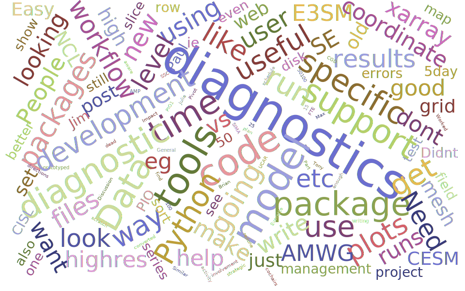

CESM Diagnostics Discussion#
Overview of CESM Workshop#
Every year, NCAR holds the Community Earth System Model (CESM) Workshop which brings together the CESM community to discuss relavant updates from the working groups as well as featured speakers and cross-working group discussions.
Software Engineering Working Group Meeting#
During the Software Engineering Working Group (SEWG) session, following a variety of talks, there was an open discussion regarding the current state of CESM diagnostics and future plans for collaboration.
The discussion started with a presentation which included updates from a wide variety of efforts across the center, with the objective being an overview of what packages/workflows are out in terms of CESM diagnostics.
The large group of ~50 people was split into breakout rooms for small group discussion, focused around the following questions:
How do you incorporate diagnostics in your workflow?
What diagnostics package(s)/tools do you currently use?
What features do you think are required before you’d use new diagnostics?
Given that much of the diagnostic development comes from volunteers in the user community, how could you or your colleagues contribute?
How could we better enable your contributions?
Obviously, groups could also provide other feedback or discuss topics outside of these five main questions, but these served as a good starting point and guide to the conversations. At the end, we came back to together to discuss the overall themes of the conversations, with an attempt to converge on some solutions to this diagnostic development problem.
Themes from the Diagnostic Discussion#
There were 8 groups, which each put together a google document summarizing their discussions. Using that information, the following word cloud was generated:

Here, we break down the main highlights from each question prompted to the groups
How do you Incorporate Diagnostics within your Workflow?#
Sanity checks
Typically it can be helpful to run a single set of diagnostics to make sure that fields look realistic - these big picture views provide general insight
Checking in on the run while it is running
Curiosity-driven analytics
Sometimes, one may be interested in looking at specific calculations outside of the realm of general mean or variability diagnostics
Be able to have same tools to look at model output and apply their own calculations + diagnostics
Other examples - aerosol work
What Diagnostic Package(s) do you Use?#
NCL-based
-
Includes diagnostics packages for each component (ex. AMWG Diagnostics Package)
-
Mostly written in NCL, moving to Python
-
Python Ecosystem
Model specific package(s)
-
Tools for working with Regional Ocean Modeling System (ROMS)
-
Tools for working with Parallel Ocean Program (POP) output
-
Tools for working with the Modular Ocean Model (MOM6)
-
Place to put workflows and tools related to the Community Terrestrial Systems Model
-
General tools
SciPy stack (Xarray, Dask, SciPy, Cartopy)
Other diagnostic packages
Grid Remapping
What features do you think are required before you would use new diagnostic packages?#
Easy to use
Easy to port (download + install)
Good documentation
Enable curiosity-driven science
Flexible to look at different fields
Work with rest of scientific python ecosystem
Xarray, Dask, XGCM
Make sure that these are modular, where one would not need to write new code to do adhoc work
Performant
Unstructured grid support
Work with both low-resolution and high-resolution output
Data provenance
Share some sort of “platform” or driver with all components
Given that much of the diagnostic development comes from volunteers in the user community, how could you or your colleagues contribute#
Coordinate with the MELODIES-MONET group
Earthcube funded, work with the Model and Observation Evaluation Toolkit
Serve as volunteer “beta testers”
Interact with AMWG Diagnostic Framework (ADF) capabilities
Continue to contribute to Model Diagnostic Task Force (MDTF) efforts
Sharing code where possible
Find ways to share a workflow
How could we better enable contributions?#
Provide well-defined APIs
Data format, code specifications, workflow, code management
Guidance on where one should invest their time
Good examples of documentation - make it easier to contribute
Have some sort of governance/team
Need to allocate funding to some of these efforts
Over-arching Comments#
Older diagnostic packages are done - need to move away from these
Currently, we are struggling to find support to move forward
Dedicated software engineer + project manager
Many different efforts, need to find plan to coordinate
Find ways of finding support for this…
Main Takeaways from the Discussion#
During this session, we gathered some valuable from those within the NCAR community, as well as more general CESM community regarding the current state, use, and future directions of CESM diagnostics. It is clear that there needs to more coordination around these efforts moving forward, with an emphasis on finding support to ensure we move beyond the older, NCL-based diagnostic packages and toward more scalable and shareable workflows utilizing the python ecosystem. We need to continue to leverage expertise from the GeoCAT, Xdev, and ESDS teams to accomplish these shared goals of creating the next generation of CESM diagnostics.